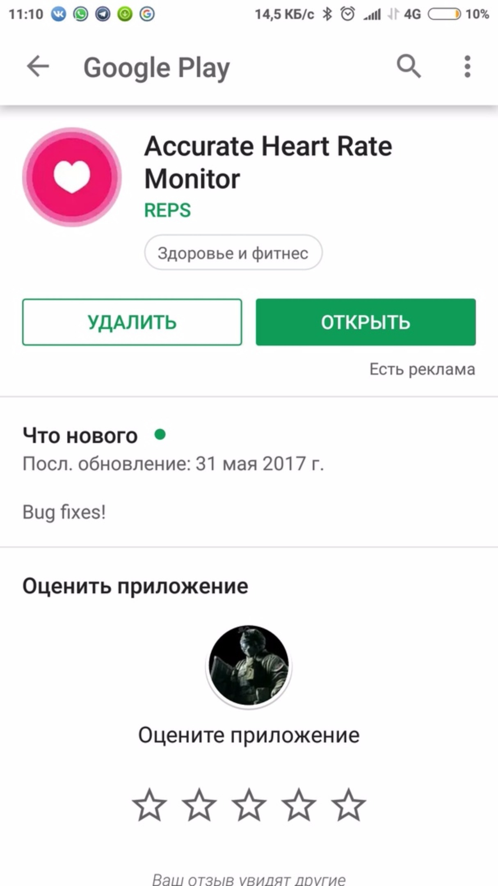

Если в вашей команде есть MacBook и хотя бы 1 iPhone, я бы настоятельно рекомендовал делать проект под iOS. Я не являюсь профессиональным Android разработчиком, а потому не сильно смогу вам помочь в будущем. Подумайте над этим.
Если в вашей команде нет MacBook, то единственный вариант который у вас есть – Android приложение.
Если вы решили делать приложение для Android, вам потребуются следующие компоненты:
AndroidStudio
Нужный SDK
Android телефон
Google аккаунт
Приложение Google Fit
Данные в Google Fit
Теперь подробнее о каждом элементе отдельно.
Android Studio
Переходим на сайт
https://developer.android.com/studio/
Скачиваем и устанавливаем.
Загружаем все предлагаемые подпункты.
Нужный SDK
Запускаем студию и идем в настройки. Смотрим на версию ОС своего телефона и качаем нужный SDK из соответствующего раздела меню.
Android телефон, Google аккаунт, Приложение Google Fit
Вам необходимо создать аккаунт для вашего проекта. Зайти в него на телефоне и установить приложение Google Fit. Далее запускаем приложение и логинемся под созданным аккаунтом. Теперь вам нужно начать собирать данные, что можно сделать, например, просто ходьбой. С GoogleFit могут интегрироваться многие приложения. Думайте какие данные вы хотите использовать в вашем проекте, ставьте соответствующие приложения на телефон и начинайте готовить данные для использования на следующей неделе.
Данные о пульсе можно брать из приложения Accurate Heart Rate Monitor

После установки приложения заходим в настройки и устанавливаем флаг интеграции с Google Fit
Далее измеряем пульс. Вскоре эти данные должны появиться в облаке Google.
Для получения данных о сне устанавливаем Runtastic Sleep Better

Интеграция автоматическая
Для получения данных о питании устанавливаем myfitnesspal

Открываем папку с проектом в андройд студии.

Синхронизируем Gradle

Нужна эта иконка

Далее подключаем телефон шнурок к компу
На телефоне открываем настройки и ищем страницу информации о ОС (о телефоне)
Много раз нажимаем на версию прошивки, пока не увидим сообщение о том что стали разработчиком
Далее где-то в настройках у вас появится пункт «Для разработчиков»
Открываем этот пункт, включаем режим разработчика и включаем все что связано с отладкой по USB
Далее идем в настройки проекта

Устанавливаем минимальную версию SDK не ниже чем версия на вашем телефоне

Пробуем запустить приложение

В окне выбора устройств выбираем свой телефон

Далее необходимо настроить консоль разработчика
Идем на сайт
https://console.developers.google.com
В окне выбора проектов создаем новый

Вводим имя проекта и сохраняем
В окне выбора проектов выбираем созданный проект

Жмем включить Api и Сервисы
В поиске вводим Fit и выбираем Fitness Api.
На странице Api жмем включить
Теперь нужно создать учетные данные
или так

На странице учетных данных жмем создать

Заполняем первую форму

Жмем выбор типа учетных данных
Открываем окно Gradle

Открываем Signing Report

Дважды кликаем на него
В консоли нам напишет

Нас интересует этот блок

Копируем SHA1 ключ
A7:fvdnvldfvnldfnvkldnvlkdnfvndfklvndlfnvkdfnvlkdnklfnvld
Открываем файл манифеста

Ищем название пакета
package="com.example.alexdark.myapplication4"

Жмем создать идентификатор клиента
Далее заполняем форму

Скачиваем ClientID

Это строка вида
чтоТоТамСекретное.apps.googleusercontent.com
Открываем файл констант

Меняем строчку
<string name="server_client_id">-- </string>
Вставляем свой ключ
Теперь еще раз запускаем приложение на устройстве и наслаждаемся его работой.
При запуске ждем когда произойдет подключение к серваку
Когда это произойдет жмем кнопку GetData
Важный код описан комментариями
Данные которые можно запрашивать из GoogleFit приведены тут
https://developers.google.com/android/reference/com/google/android/gms/fitness/data/DataType
Чтобы получить доступ к ряду значений необходимо при создании клиента запрашивать дополнительные разрешения
mGoogleApiClient = new GoogleApiClient.Builder(this)
.addApi(Fitness.HISTORY_API)
.addScope(new Scope(Scopes.FITNESS_ACTIVITY_READ_WRITE))
.addScope(new Scope(Scopes.FITNESS_BODY_READ_WRITE))
.addScope(new Scope(Scopes.FITNESS_NUTRITION_READ))
.addConnectionCallbacks(this)
.enableAutoManage(this, 0, this)
.build();
Подробно об этом написано тут
https://developers.google.com/android/reference/com/google/android/gms/common/Scopes
Если вы хотите анализировать активность то расшифровка типов приведена тут
https://developers.google.com/fit/rest/v1/reference/activity-types
Если вам нужно получать из облака данные которых там нет, можно попробовать записать их туда самим. Google Fit позволяет записывать данные в облако. Тут очевидного ответа а как нет. Можно выделить лишь общий принцип
Создаем дата сорс
Создаем дата сет из сорса
Создаем измерение
Заполняем измерение данными
Кладем измерение в дата сет
Отправляем дата сет
Основные сложности будут с шагом 4. Каждый дата поинт для разных типов данных имеет свою специфику заполнения. Это вам придется гуглить. В проекте есть пример для создания активити. Это самый простой пример. Желательно конечно, чтобы вы нашли мобильное приложение, которое интегрируется с фитом.